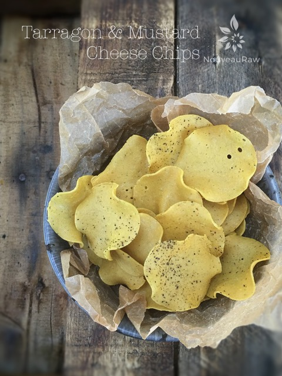
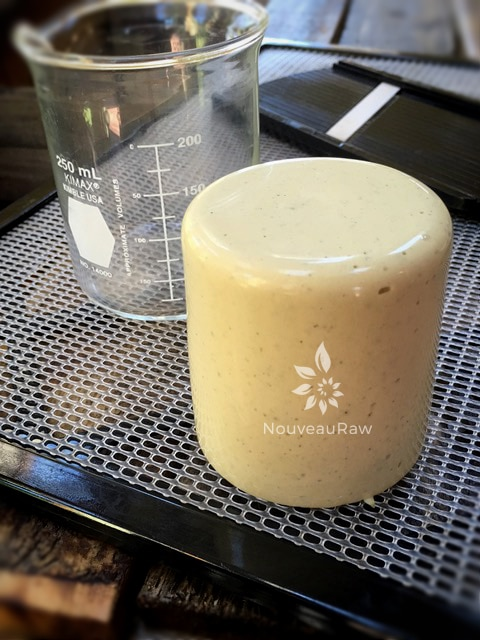
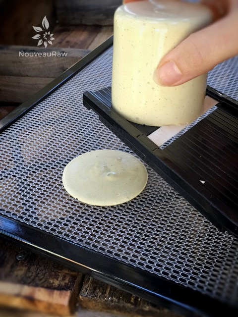
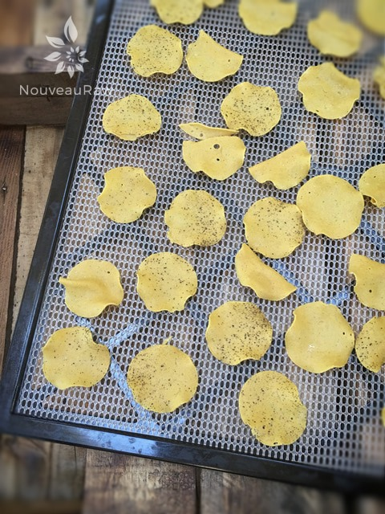
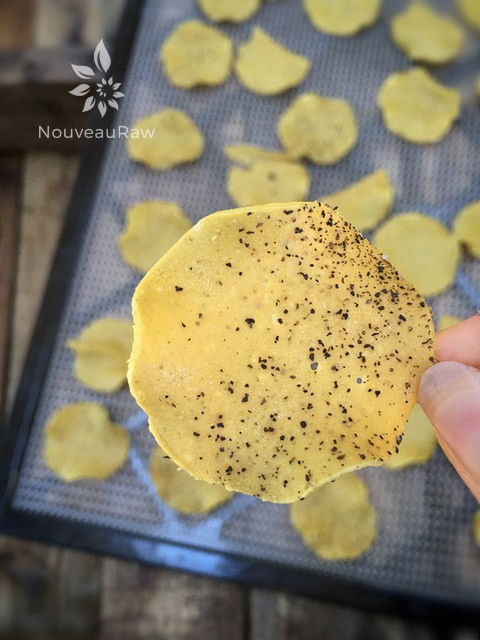
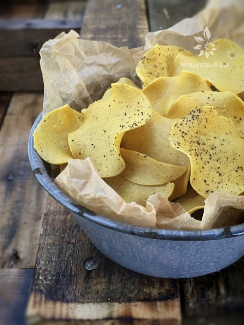
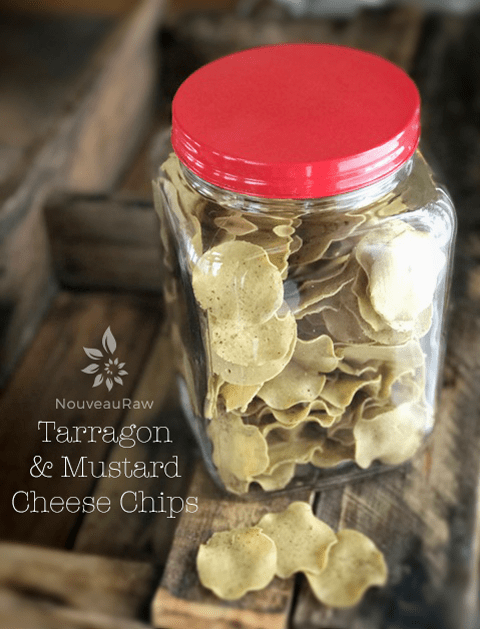
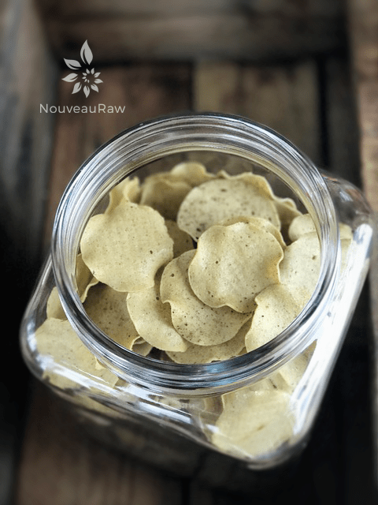
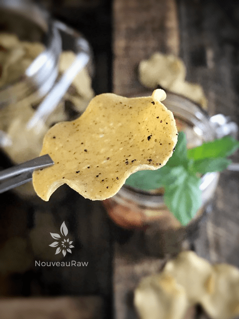

Tarragon & Mustard Cheese Chips

~ high-raw, vegan, gluten-free ~
This is a totally new technique/concept in the raw world. Stop what you’re doing and make some right now. You won’t regret it, I promise.
I have been creating cheese chips for many years now, I just never shared the technique. My hope was to one day do a cookbook with them, but I am not sure when that will happen, so here is a special recipe for my loyal members. :)
These cheese chips are out of this world amazing. They have a crispy, chip-like texture. When Bob and I were standing around the kitchen island munching away, it sounded something like (this). I am not pulling your apron strings either.
While they are dehydrating, they naturally curl around the edges, giving them that fried look. They also deepen in color. So many wonderful unexpected surprises.
The key is to use a mandolin that will create very thin slices. I own many different ones, and I find that (this) one works the best.
It not only creates those thin slices that we are after, but you can also hold it over the dehydrator tray…letting the chips fall wherever they may.
You will want them to be in a single layer, but it is ok if they fold over onto themselves. This just adds more of that chip characteristic that we all are used to.
The whole idea of testing this technique started because I made an abundance of agar cheeses. Far too much for Bob and I to eat, this isn’t uncommon for me to do. I just get so excited when I work/play in the kitchen. So, I sat there, with the blocks of cheese sitting in front of me… pondering on what I could do to preserve all my work. And that is when I wondered what would happen if I were to dehydrate thin slices of it. It was nothing more profound than that. :)
This flavor profile was inspired by my Tarragon & Mustard Vegan Cheese recipe. Yep, you guessed it… I had made too much of the cheese itself… chips it is! I know you will you enjoy my exciting new discovery, there is nothing like it anywhere in the raw land! Please comment below. I would love to hear from you. Many blessings, amie sue
yields 2 cups
- 1/2 cup raw almonds or cashews, soaked
- 1/2 cup water
- 1/4 cup nutritional yeast
- 1/4 cup lemon juice
- 2 Tbsp hemp seeds
- 2 tsp Dijon mustard
- 1/2 Tbsp onion powder
- 1/2 tsp garlic powder
- 1/2 tsp dry mustard
- 3/4 tsp Himalayan pink salt
- 1 garlic clove
- 3 tsp dry tarragon leaves
Agar slurry:
Preparation:
- Have the cylinder shaped cheese mold(s) set aside and ready.
- This batter will make 2 cups of cheese. I like to pour a measured amount of water in my molds first, just to make sure that it (they) will hold all of the cheese batter. That way you aren’t scrambling last-minute to find something.
- Keep in mind that whatever impressions are in your container will leave an impression on your cheese. The last batch of cheese that I made said, “Recycle” on it. haha
- Soak the almonds or cashew, rinse and drain.
- Pop the skins off of the almonds. If you don’t, you can see the brown flecks of the almond skins in the cheese. Trust me; it doesn’t look appealing.
- I have used both nuts in this recipe but for the photos that you see… I used cashews.
- In a high-speed blender place the; almonds or cashews, water, nutritional yeast, lemon juice, hemp seeds, onion and garlic powders, dry mustard, Dijon mustard, salt, garlic clove, and tarragon leaves. Process until creamy.
- You want to batter creamy before starting the agar. If your batter is grainy, so will your cheese.
- This batter will be very thick, and you may need to stop and scrape the edges of the container, pushing the ingredients towards the blade.
- I have used both a yellow and Dijon mustard, both wonderful in flavor, but the yellow mustard makes for a brighter chip (as seen in photos).
- If you use fresh tarragon, the color of the chips will be altered.
- If you don’t have hemp seeds, sunflower seeds work great too. I have done both.
- In place of lemon juice, raw coconut vinegar works great too. Tested both versions.
Agar slurry:
- In a small pan combine water and agar. Bring to a boil then reduce the heat and simmer, often stirring with a whisk, until completely dissolved, about 5 to 10 minutes.
- Start the blender and get a vortex going, drizzle in the agar mixture in with the other ingredients and process until completely smooth, scraping down the sides of the blender jar as necessary.
- You will need to move quickly. Agar sets up quickly.
- Be careful not to burn yourself.
- Pour the batter into the molds and cool uncovered in the refrigerator.
- The best way to clean the blender is to put cold water into it. It will firm up the sauce left behind, and it will rinse right out.
Creating the chips:
- Remove the cheese from the mold and using a mandolin, cut very thin slices, allowing them to drop directly onto the mesh sheet that comes with the dehydrator.
- Let the chips fall where they may, even if they fold and crinkle. They are like snowflakes; no two should be the same.
- Think of how chips look when you buy a bag of them… or use to anyway. hehe
- Sprinkle with sea salt and black pepper.
- Dehydrate at 145 degrees (F) for 1 hour, then reduce to 115 degrees (F) for 10+ hours.
- The dry time will vary depending on how full the machine is, the humidity, climate, and so forth. So use the dry times as a guide.
- One done and crispy, allow them to cool and then store in an airtight container on the counter for 5-7 days. If they start to collect moisture just pop them back in the dehydrator to crisp them up.
Culinary Explanations:
- Why do I start the dehydrator at 145 degrees (F)? Click (here) to learn the reason behind this.
- When working with fresh ingredients, it is important to taste test as you build a recipe. Learn why (here).
- Don’t own a dehydrator? Learn how to use your oven (here). I do however truly believe that it is a worthwhile investment. Click (here) to learn what I use.

Prepare the cheese batter and place in a cylinder mold. I used a glass beaker because it has a flat bottom and the sides are straight up and down.

Slice very thin, allowing the chips to fall where they may.

Salt and pepper them and slide into the dehydrator.

I love how they darken in color and curl naturally. You would think that they are a fried potato chip at first glance.


These won’t last long… trust me, they are down right addicting.

The chips below were made with Dijon mustard and the above were made with yellow mustard. Both great, just different colors.



© AmieSue.com